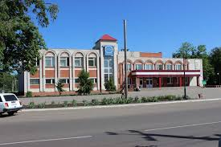

Городская застройка
Город застроен преимущественно частными деревянными и кирпичными домами. В центре Боброва, на ул. Карла Маркса, есть квартал,
застроенный 2-5 этажными домами, в обиходе известен как «микрорайон».
С 2011 года ведётся расселение ветхих одноэтажных многоквартирных домов в центре города.
Спорт
В 2007 году открыто новое здание ДЮСШ г. Боброва с плавательным бассейном, строившееся с перерывами с начала 2000-х годов.
В 2010 году был открыт Ледовый дворец. Его строительство осуществлялось в рамках федеральной целевой программы «Развитие физической культуры и спорта в РФ на 2006—2015 годы».
В торжественном мероприятии по поводу открытия приняли участие председатель комиссии Совета Федерации по физической культуре, спорту и развитию олимпийского движения
В. А. Фетисов и глава администрации Воронежской области А. В. Гордеев.
В 2010 году реконструирован городской стадион.

1
- 2
- 3
- 5